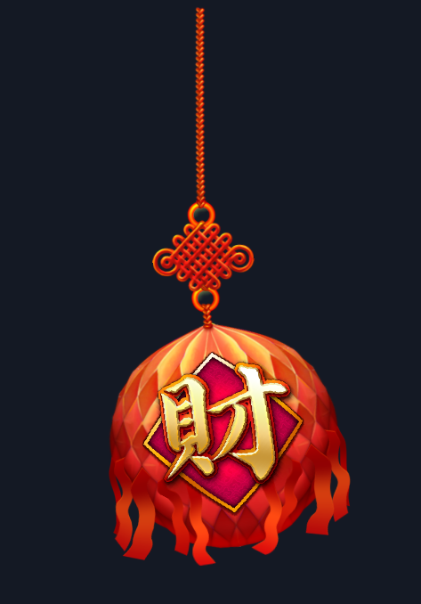

AutoSpine 影片重建改善・2026-10-27新進展：已依後續授權新增人工綁定＋影片新動作版。本頁保留自動重建版結果，兩種模式分開比較。
2026-10-27 · 本機未發布修正版 · 以 AutoSpine 0.5.16 為基礎
影片重建改善：先修骨架與姿勢，再對節奏
貓咪 Idel_02 目前五項通過四項；部件位置仍未通過，尚未達到正式製作品質。這是同一段影片的調整結果，不代表其他角色會自動通過。
原三案九段的完整通過數維持 0/9；本頁候選另列，不改寫歷史成績。原九段報告 · 主報告
貓咪・新候選
左：原作輸出的 MOV。右：新製專案，依序佈線 → 骨架 → 完整動態。參考｜成品｜差異 ×4 · 下載可編修 Spine 專案與圖片
| 項目 | 原 0.5.16 | 動作與表情合併 | 節奏校正後 |
|---|
| V1 輪廓 | FAIL
[0.89,0.864] | PASS
[0.908,0.867] | PASS
[0.907,0.865] |
| V2 部件位置 | FAIL
[1.82,11.42,"38 parts"] | FAIL
[1.28,8.28,"38 parts"] | FAIL
[1.46,8.11,"38 parts"] |
| V3 節奏幅度 | FAIL
[-12,0] | FAIL
[-6,0.85] | PASS
[1,0.85] |
| V4 循環接點 | PASS
0 | PASS
0 | PASS
0 |
| V5 翻折 | PASS
[] | PASS
[] | PASS
[] |
調整了尾巴的大小與擺位，保留由嘴邊往外的鬍鬚方向，加入完整閉眼部件切換及打哈欠的嘴內、舌頭、下巴形變，再合併影片追蹤。主骨追蹤層延後 6 幀，表情保留各自事件時間。整體時間差從提前 6 幀變成晚 1 幀。
取捨與未完成：節奏校正後，部件誤差中位數由 1.28% 增為 1.46%，第 90 百分位從 8.28% 降為 8.11%；兩者都未達 0.6%／1.5% 門檻。耳毛、尾巴局部與身體仍需調整；不能只因多一項 PASS 就稱為全面改善。完整差異與未評部件
Spine 原生骨架狀態
由交付的 .spine 以官方 Spine 4.0.64 播放輸出，包含打哈欠姿勢。此為原生輸出，不是編輯器介面截圖；上方佈線影片由新建置資料播放。實際編輯器中的佈線／權重檢視仍待確認，因背景執行未喚起帶有未儲存專案的視窗。
新建置與 Spine 匯入後再匯出的核對：通過，最大頂點誤差 0.3106 px，限制 0.5 px；90,288 個頂點取樣，拓樸不一致 0。這是交付一致性，不是原作模仿品質。核對方法與數據
正式製作可重用的改善
- 首幀獨立檢查：位置或骨架求解未就緒時停止擬合，不放寬門檻。
- 配對只使用可見部分，納入圖層著色；被遮住及無法判讀的圖層另列，不宣稱已擬合。
- 追蹤限制每步位移與轉角，正反向檢查並保留無法確認的區段，減少跳到相似毛色或另一部件。
- 骨鏈記錄根端、末端與附著點關係；模糊或未驗證的方向需要檢查。
- Skill 補上完整表情部件切換與主體節奏優先的順序，個案延遲不存為通用預設。
已更新本機原始碼、Skill 與外掛打包檔；尚未發布或替換你安裝的 0.5.16。針對受影響功能的測試共 51 項通過、1 項跳過；型別檢查與打包一致性通過。版本來源與測試範圍
| 案例 | 首幀就緒 | 可見配對率 | 明顯位移占比 | 骨架無法到位占比 |
|---|
| 貓咪・最終候選 | 可進下一階段 | 87.7% | 10.6% | 5.8% |
| 宙斯・原建置 | 可進下一階段 | 97.0% | 0.0% | 0.0% |
| 冰屋・原建置 | 停止，需修正 | 82.0% | 100.0% | 66.4% |
| 新彩球・修正匯入後 | 停止，需修正 | 100.0% | 95.3% | 3.9% |
新配對率以可見取樣為分母，與舊 0.5.16 的全圖層覆蓋率不能直接比較。配對率不是動畫相似度；首幀就緒也不是整段通過。
新素材檢查：舞獅彩球

另選 14 段動畫的彩球專案，僅從原作輸出 MOV，再以乾淨 PNG 與靜態擺位建立 32 骨的新骨架。首次匯入發現合法空皮膚問題，並補上明確選擇皮膚及 default 回補。這些修正已有獨立合成測試，但本案例已參與問題發現，因此標示為修正後回歸驗證，不當作未見素材盲測通過。
選擇影片中的 Ball_fiscal；靜態擷取仍有兩個附件實例超過 2 px，最大 2.19 px。首幀明顯位移占比 95.3%，超過 25%，已停止後續動態擬合。未完成整段重建，也沒有宣稱泛化成功。首幀數據 · 靜態限制
本輪範圍
原作的骨架、網格、權重及動畫數值未被複製；調整依據為 MOV、乾淨靜態擺位與 PNG。匯出 MOV、隔離素材與更新報告只屬本次比較措施，沒有加入正式製作的必做步驟。尚未達成所有角色、所有動作皆能準確完成的目標；接續重點為局部部件與表情形變驗證，以及引擎固定後另一份未見素材的完整測試。